Mount Rainier National Park Travel Guide
National park preserving all of Mount Rainier, a 14,411-foot (4,392 m) stratovolcano, surrounded by valleys, waterfalls, subalpine meadows, and old-growth forest
Places to See in Mount Rainier National Park
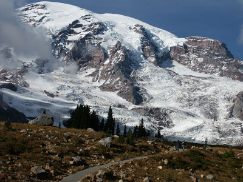
Jeff P from Berkeley, CA, USA, CC BY 2.0, via Wikimedia Commons; Image Size Adjusted
.jpg){kind=link}
Alta Vista Trail
A paved alpine loop that climbs through meadow and forest scenery to panoramic viewpoints with expansive mountain and wildflower views.
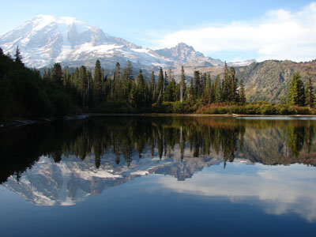
Jeff P from Berkeley, CA, USA, CC BY 2.0, via Wikimedia Commons; Image Size Adjusted
Bench and Snow Lakes Trail
Short alpine hike featuring two scenic subalpine lakes, seasonal wildflower meadows, mountain vistas, and tranquil forest landscapes beneath dramatic volcanic peaks.
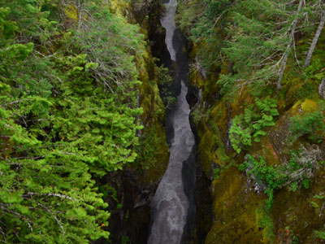
Jeff P from Berkeley, CA, USA, CC BY 2.0, via Wikimedia Commons; Image Size Adjusted
Box Canyon
A dramatic volcanic river gorge features a narrow rock-walled chasm spanned by a historic bridge and an overlook above rushing water.
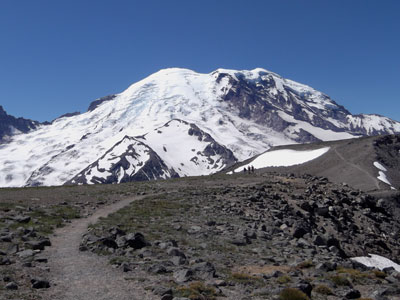
Jeff P from Berkeley, CA, USA, CC BY 2.0, via Wikimedia Commons; Image Size Adjusted
Burroughs Mountain Trail
High alpine trail traversing open ridges and tundra with exceptionally close views of glaciers, volcanic landscapes, and expansive mountain scenery.
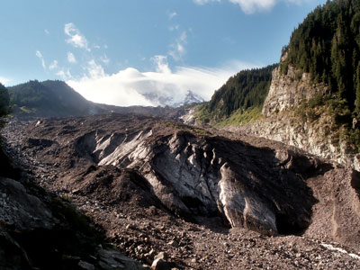
Jeff P from Berkeley, CA, USA, CC BY 2.0, via Wikimedia Commons; Image Size Adjusted
Carbon Glacier Trail
Trail through old-growth rainforest leading to a dramatic viewpoint of a massive debris-covered glacier descending from the upper slopes of a volcanic peak.
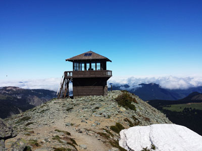
Jeff P from Berkeley, CA, USA, CC BY 2.0, via Wikimedia Commons; Image Size Adjusted
Fremont Lookout
Historic fire lookout trail crossing alpine meadows and rocky ridges with sweeping views of glaciers, mountain peaks, and subalpine landscapes.
Frozen Lake
Remote alpine lake destination featuring wildflower meadows, open ridgelines, mountain views, and a peaceful backcountry setting surrounded by Mount Rainier's rugged subalpine landscape.
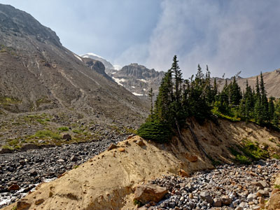
Jeff P from Berkeley, CA, USA, CC BY 2.0, via Wikimedia Commons; Image Size Adjusted
Glacier Basin Trail
Mountain trail following a glacially carved valley through forests, meadows, and river crossings to expansive views of ice-covered peaks and active glacier landscapes.
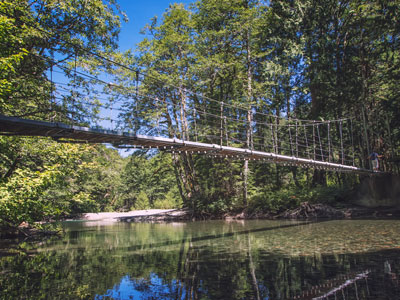
Jeff P from Berkeley, CA, USA, CC BY 2.0, via Wikimedia Commons; Image Size Adjusted
Grove of the Patriarchs Trail
Ancient old-growth forest trail featuring massive Douglas-firs and western red cedars, scenic river views, and one of the park's most accessible rainforest-like environments.
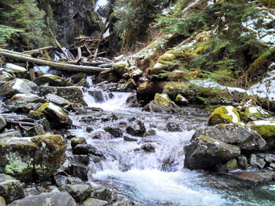
Jeff P from Berkeley, CA, USA, CC BY 2.0, via Wikimedia Commons; Image Size Adjusted
Ipsut Creek
Riverside trail leading through old-growth forests and historic backcountry landscapes to a peaceful campground surrounded by mountain scenery and wilderness.
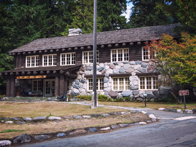
Jeff P from Berkeley, CA, USA, CC BY 2.0, via Wikimedia Commons; Image Size Adjusted
Longmire
Historic park district featuring a forested meadow, mineral springs, rustic architecture, museum exhibits, lodging, and access to scenic trails.
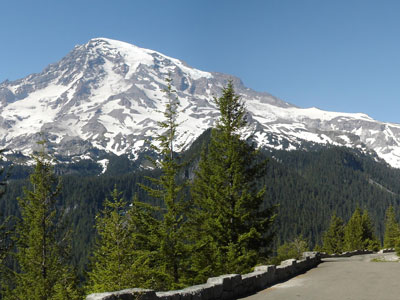
Jeff P from Berkeley, CA, USA, CC BY 2.0, via Wikimedia Commons; Image Size Adjusted
Mount Rainer
Massive glacier-covered stratovolcano rising above surrounding forests and valleys, forming the highest peak in Washington and one of the most prominent mountains in North America.
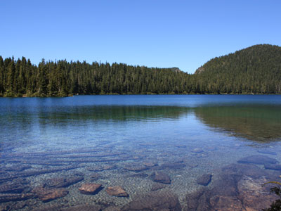
Jeff P from Berkeley, CA, USA, CC BY 2.0, via Wikimedia Commons; Image Size Adjusted
Mowich Lake
Large glacial lake surrounded by subalpine forest and wildflower meadows that provides access to camping, paddling, fishing, and scenic mountain trails.
Narada Falls
Multi-tiered waterfall cascading over volcanic rock beside a historic stone bridge, with easily accessible viewpoints showcasing one of the park’s most dramatic water features.
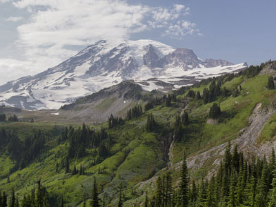
Jeff P from Berkeley, CA, USA, CC BY 2.0, via Wikimedia Commons; Image Size Adjusted
Nisqually Vista Trail
Paved alpine loop trail offering close-up views of glaciers, wildflower meadows, and sweeping mountain landscapes from one of the park's most accessible high-elevation settings.
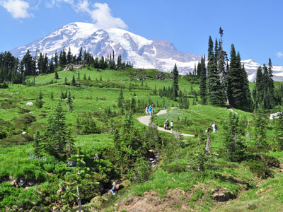
Jeff P from Berkeley, CA, USA, CC BY 2.0, via Wikimedia Commons; Image Size Adjusted
Paradise
Expansive subalpine landscape known for wildflower meadows, glacier views, alpine hiking routes, winter recreation, and panoramic mountain scenery.
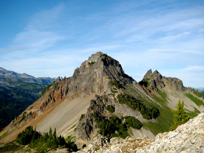
Jeff P from Berkeley, CA, USA, CC BY 2.0, via Wikimedia Commons; Image Size Adjusted
Pinnacle Peak
Steep alpine trail climbing through forest and rocky slopes to a high mountain saddle with sweeping views of volcanic peaks, glaciers, and surrounding ridgelines.
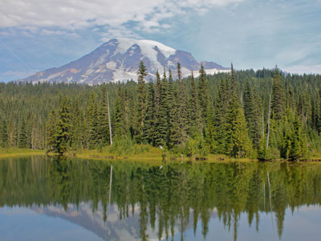
Jeff P from Berkeley, CA, USA, CC BY 2.0, via Wikimedia Commons; Image Size Adjusted
Reflection Lakes
Scenic roadside lakes reflecting snow-capped peaks, alpine meadows, forests, and some of the most iconic mountain vistas in the Pacific Northwest.
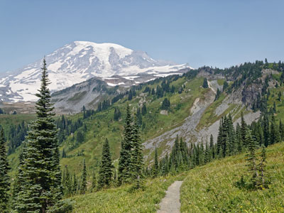
Jeff P from Berkeley, CA, USA, CC BY 2.0, via Wikimedia Commons; Image Size Adjusted
Skyline Trail
Alpine loop trail traversing wildflower meadows, glacier viewpoints, waterfalls, and high mountain ridges with some of the most iconic scenery in the Pacific Northwest.
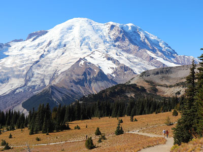
Jeff P from Berkeley, CA, USA, CC BY 2.0, via Wikimedia Commons; Image Size Adjusted
Sourdough Ridge Trail
High-elevation ridge trail crossing subalpine meadows and open slopes with expansive views of glaciers, volcanic peaks, wildflowers, and the surrounding Cascade Range.
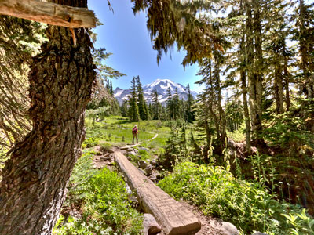
Jeff P from Berkeley, CA, USA, CC BY 2.0, via Wikimedia Commons; Image Size Adjusted
Spray Park Trail
Scenic alpine trail passing through forest, waterfalls, and expansive wildflower meadows with outstanding views of glaciers, volcanic peaks, and rugged mountain terrain.
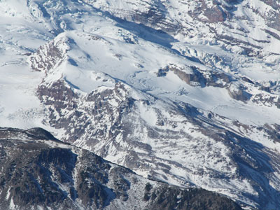
Jeff P from Berkeley, CA, USA, CC BY 2.0, via Wikimedia Commons; Image Size Adjusted
Steamboat Prow
High-country trail traversing alpine meadows and rugged ridgelines to a dramatic viewpoint overlooking glaciers, volcanic terrain, and the immense northeastern face of Mount Rainier.
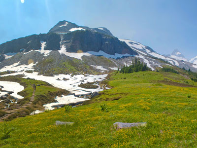
Jeff P from Berkeley, CA, USA, CC BY 2.0, via Wikimedia Commons; Image Size Adjusted
Summerland Trail
Scenic mountain trail climbing through old-growth forest and wildflower-filled alpine meadows with panoramic views of glaciers, rugged peaks, and expansive high-country landscapes.
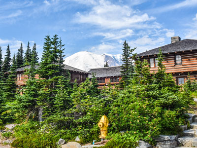
Jeff P from Berkeley, CA, USA, CC BY 2.0, via Wikimedia Commons; Image Size Adjusted
Sunrise Visitor Center
High-elevation visitor destination featuring panoramic mountain views, alpine meadows, glacier vistas, interpretive exhibits, and access to some of the park’s most scenic hiking trails.
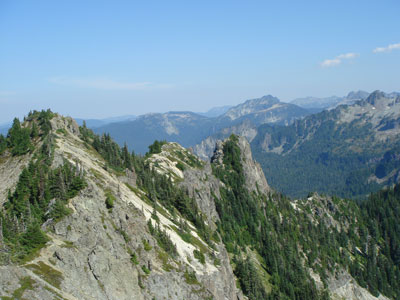
Jeff P from Berkeley, CA, USA, CC BY 2.0, via Wikimedia Commons; Image Size Adjusted
Tolmie Peak Lookout Trail
Historic fire lookout trail leading past a scenic alpine lake to a ridgeline viewpoint with sweeping views of glaciers, forests, and a prominent volcanic summit.
Overview
Mount Rainier National Park in western Washington protects 236,381 acres around Mount Rainier, a 14,411-foot glacier-covered volcano that is the highest peak in the Cascade Range and the most glaciated mountain in the lower 48, with more than 25 major glaciers. On clear days the mountain dominates the skyline from Seattle, about 60 miles northwest. The park's slopes support subalpine wildflower meadows, old-growth forest, waterfalls, and rivers, and the volcano is still considered active. The whole park is a National Historic Landmark District.
Mount Rainier was established on March 2, 1899, as the fifth national park in the country. People visit for the wildflower meadows, which bloom in July and August, the views of the mountain from Paradise and Sunrise, the glaciers, waterfalls, and old-growth forest, and the hiking, including the 93-mile Wonderland Trail around the mountain. Mountaineers from around the world attempt to climb it. Its proximity to Seattle and Tacoma makes it popular for day trips as well as longer visits.
Park Sections
The park has several areas. Paradise, on the south side at 5,400 feet, is the most popular, with meadows, the Henry M. Jackson Visitor Center, Paradise Inn, and the Skyline Trail. Longmire, near the southwest entrance, is the historic park headquarters with the National Park Inn and a museum. Sunrise on the northeast is the highest point reachable by road, at 6,400 feet, with views and trails. Ohanapecosh in the southeast has the Grove of the Patriarchs and old-growth forest. The northwest corner, with the Carbon River and Mowich Lake, is quiet and remote.
Sightseeing and Exploring the Park
The drive from the Nisqually entrance to Paradise passes Longmire, Christine Falls, Narada Falls, and viewpoints of the mountain. Stevens Canyon Road, a scenic route east from Paradise, passes Reflection Lakes, where the mountain is mirrored in the water on calm mornings, Box Canyon, and the Grove of the Patriarchs. The Sunrise Road climbs to Sunrise Point and the visitor center with views of Emmons Glacier, the largest in the lower 48. Timed-entry reservations may be required for some entrances in peak season, so check the National Park Service website.
Hiking
The park has about 260 miles of trails. Easy walks include the Nisqually Vista Trail (1.2 miles) and the Alta Vista Trail (1.75 miles) at Paradise, and the Grove of the Patriarchs (1.3 miles). The Skyline Trail (5.5 miles) is the park's classic loop, passing meadows and glacier views. At Sunrise, the Sourdough Ridge Trail, Fremont Lookout, and Burroughs Mountain Trail offer high views. Tolmie Peak, Spray Park, and Summerland are longer, and the Carbon Glacier Trail leads to the lowest-elevation glacier in the lower 48. Snow lingers on high trails into July.
Other Activities
Mountaineering is a major activity. About 10,000 people attempt to summit each year, most with a guide service, and others hike to Camp Muir at 10,000 feet. In winter, Paradise is a popular place for snowshoeing, cross-country skiing, and snow play, and rangers lead snowshoe walks. Other activities include backpacking the 93-mile Wonderland Trail, camping, fishing, bicycling on park roads, ranger programs, and stargazing. The park has no cave tours or boat outfitters, but guided climbs and ski tours are offered by licensed guide services.
Flora and Wildlife
The park's meadows of subalpine wildflowers, including lupine, paintbrush, and avalanche lily, peak in late July and August and are among the most famous in the Northwest. Lower slopes have old-growth forest of Douglas fir, western hemlock, and western redcedar. Wildlife includes black bears, black-tailed deer, elk, mountain goats, marmots, pikas, cougars, and many birds, including Clark's nutcrackers and gray jays. Hoary marmots are often seen on the trails at Paradise and Sunrise. Viewing is on your own, and rangers lead wildflower walks in summer.
Access
The park is about 60 miles southeast of Seattle. The Nisqually Entrance, the main year-round entrance, is reached via Highway 706 through Ashford, about 2 hours from Seattle and 1.25 hours from Tacoma. Sunrise and the White River entrance are reached via Highway 410 from Enumclaw, and the Stevens Canyon entrance via Highway 123 near Packwood. Seattle-Tacoma International Airport is about 2 hours away, and Portland is about 3 hours. Visitors arrive by car, and there is no public transportation to the park, though some tours run from Seattle in summer.
Seasons
Summer is the main season: Paradise and Sunrise are best from July to September, with wildflowers in late July and August, but crowds, parking shortages, and timed-entry reservations can apply. Fall brings colorful huckleberry and fewer visitors, with early snow possible in October. Winter is long and snowy, with Paradise receiving more than 50 feet of snow; the road from Nisqually to Paradise stays open most days, but the Sunrise and Stevens Canyon roads, and Highway 410 over Chinook Pass, close from about November to May or June. Spring is a transition of snowmelt and mud.
Camping and Lodging
The park has five main campgrounds: Cougar Rock near Longmire, Ohanapecosh, White River, Mowich Lake, and Sunshine Point, and backcountry camping requires a permit. Lodging in the park includes the National Park Inn at Longmire, open year-round, and the historic Paradise Inn, open in summer. Nearby, the town of Ashford, near the Nisqually entrance, has cabins, inns, and B&Bs such as Alexander's Country Inn, and Packwood and Crystal Mountain on the east side offer hotels and condos. Enumclaw, Greenwater, and Eatonville have more options, and Tacoma and Seattle have many hotels.
Visitor Centers
The Henry M. Jackson Memorial Visitor Center at Paradise is the park's main visitor center, with exhibits, a film, a bookstore, and a view of the mountain. The Longmire Museum and Wilderness Information Center cover the park's history and issue backcountry permits. The Sunrise Visitor Center is open in summer, as are the Ohanapecosh Visitor Center and the Carbon River Ranger Station. Hours vary by season, so check the National Park Service website.
Areas at a Glance
| Area | What to Expect |
|---|---|
| Paradise | The most popular area, at 5,400 feet, with meadows, the Henry M. Jackson Visitor Center, and the Skyline Trail; Narada Falls is on the way |
| Longmire | The historic headquarters, National Park Inn, and museum |
| Sunrise | The highest road-accessible point, with the Sourdough Ridge Trail and Fremont Lookout |
| Carbon River and Mowich | The quiet northwest, with Carbon Glacier, Mowich Lake, and Tolmie Peak |
Good to Know
- Season: Paradise and Sunrise are best from July to September, with wildflowers in late July and August; some roads close in winter and reservations may be required in peak season
- Climbing: Mount Rainier is a serious glacier climb, and most people go with a guide
- Wonderland Trail: a 93-mile loop around the mountain
This article uses material from the Wikipedia articles and official tourism pages for Mount Rainier National Park, released under the Creative Commons Attribution-Share-Alike License 3.0. Additional information comes from the National Park Service Mount Rainier National Park website.
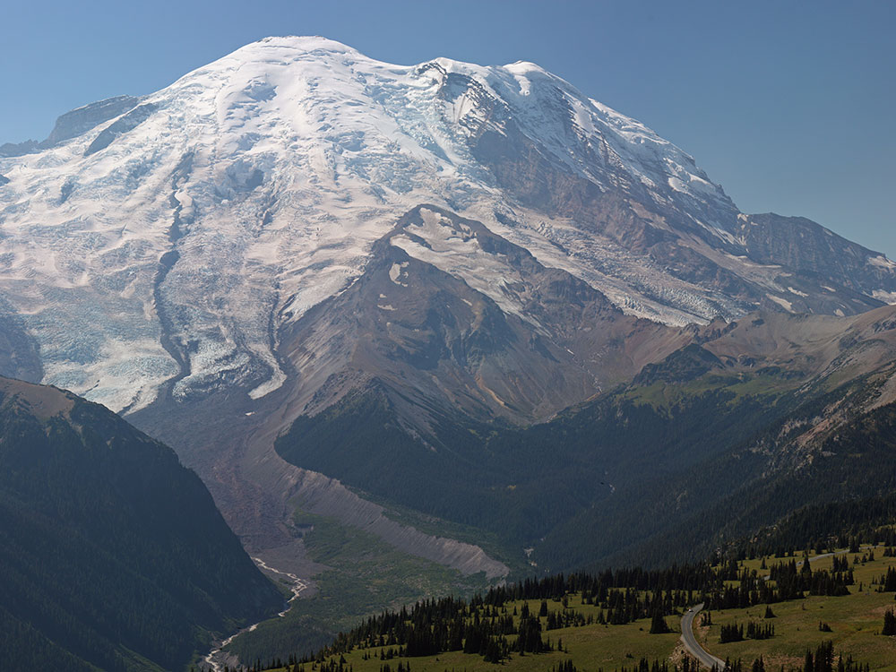

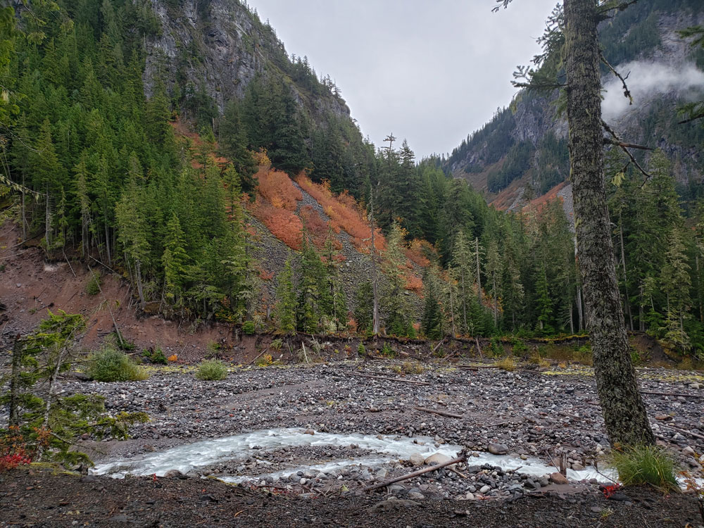
.jpg){kind=link}
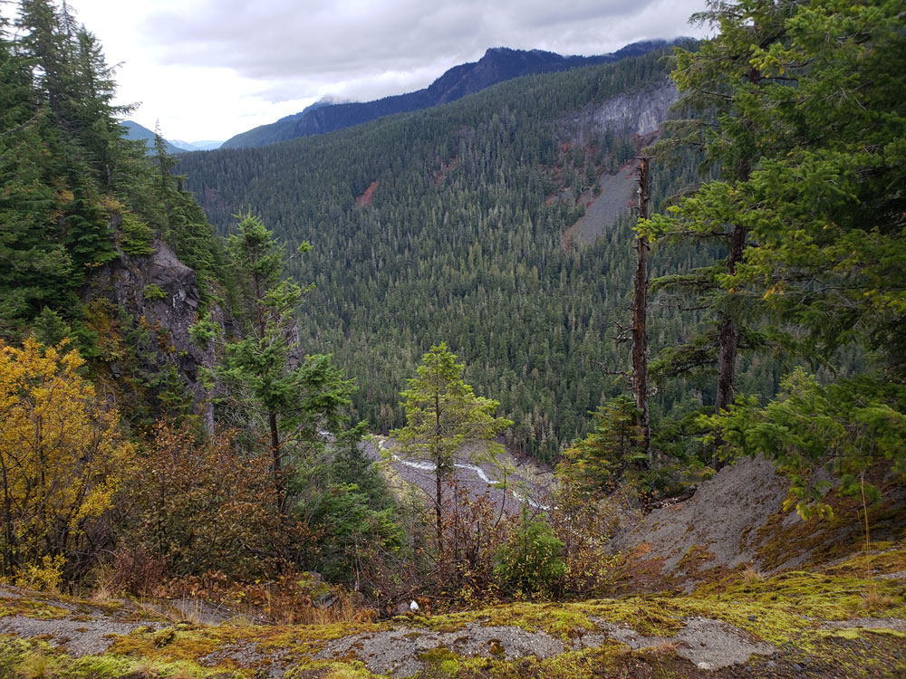
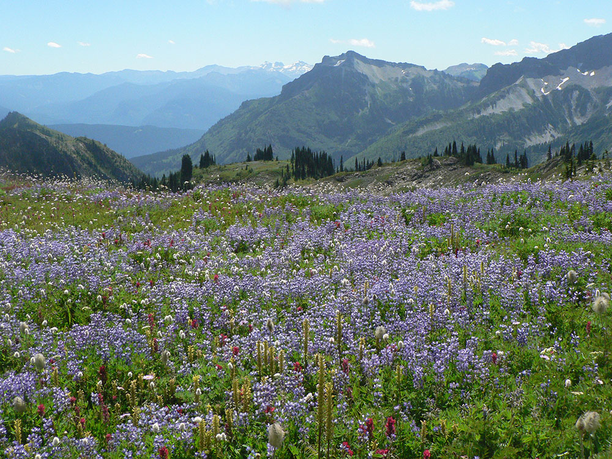
.jpg){kind=link}